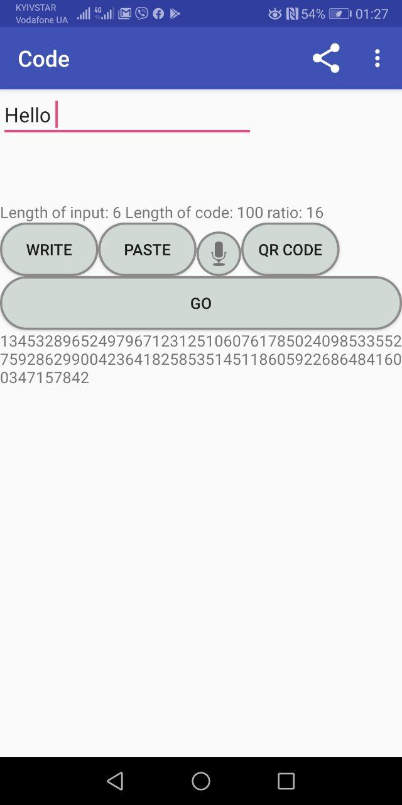

"The best way to test your cipher is to make it public" - words of one random user on the Reddit that inspired me to go out of my comfort zone, implement and develop the most successful IT project of mine ever.
In October, I applied to the annual National competition "Samsung IT". After excelling in the extremely selective test, I won a full scholarship for priceless education and mentoring for developing the Android app.
In April, the admission officers recognized my work as one of the best in Kyiv: I proceed to the National stage.
Now, I present my ciphering app. For the first time in life, I reached the 26th floor of Tower 101, where the Samsung Ukraine office is located, and the final round was placed. My work became top 14 out of 200+.
Link to the article (in Ukrainian): click to open the article
GitHub: click to open the GitHub page
How does my cipher work?